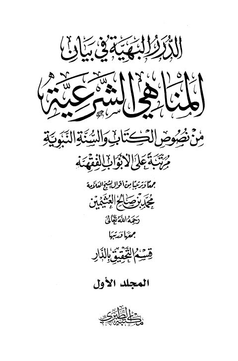

Downloads need an internet connection.
الدرر البهية في بيان المناهي الشرعية من نصوص الكتاب والسنة النبوية مرتبة على الأبواب الفقهية
Authors: محمد بن صالح العثيمين
Editors: قسم التحقيق بالدار
Publishers: مكتبة الطبري للنشر والتوزيع
**▫️ العنوان: الدرر البهية في بيان المناهي الشرعية من نصوص الكتاب والسنة النبوية مرتبة على الأبواب الفقهية** ▪️ المؤلف: #محمد_بن_صالح_العثيمين ▫️ المحقق: #قسم_التحقيق_بالدار ▪️ الناشر: #مكتبة_الطبري ▫️ تاريخ النشر: 1428هـ 2007م ▪️ بلد النشر: القاهرة، #مصر ▫️ الطبعة: 1 ▪️ عدد الأجزاء: 3 ▫️ الصفحات: 1486 ▪️ نوع الوعاء: #كتاب ▫️ التصنيف الرئيسي: #الفقه_وأصوله ۪